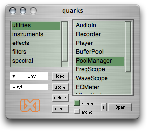

ixiQuarks : Getting Started

|
Getting Started |
Crucial: Is audio-in and audio-out working? ixiQuarks will use the audio driver selected in your System Preferences. It can work with any external soundcard as long as that used by the system. If you are on an Intel Mac and you don't have an external soundcard, you need to create an Aggregate Device (using an application called Audio MIDI Setup.app found in Applications/Utilities). The Aggregate device will have the inputs and outputs that you choose. You might need to click a radio button saying "Resample".
Study 1 - The ixiQuarks window There are two main list-views in the ixiQuarks window. On the left side there are categories for what kind of tools you want to use. When you have selected a category, you get the specific tools under that category listed in the right list view. You can switch between views with the TAB button. Use the stereo or mono radio-buttons to define whether the tool is 1 or 2 channel. The "f" button will open up the folder where sounds are recorded. On the bottom-left there is functionality to store settings. Load up your instruments, effects and filters, arrange them on the screen and then store the setting. You can retrieve that setting at any point.
Study 2 - The bufferPool The bufferPool is perhaps the most important utility of the ixiQuarks. This is the tool you use to load in your soundsamples. It loads samples into RAM, so for longer sounds it might be better to use the Player. Choose the sounds that you want to import (you can select many at the time) and load them. When loaded, you can view the sound by hitting RETURN or ENTER, and you can select a part of the sound to be used in the other instruments (such as the SoundScratcher). You can record (by hitting the "r" button) into the bufferPool as well by opening up the AudioIn tool and send the audio out on any bus and then record from that bus into the bufferPool. Now, when you have some sounds in the bufferPool, load up some instruments, such as the SoundScratcher and perform with the sounds. You can use as many bufferPools as you want at any one time and you can save the state of the bufferPool in the PoolManager so you don't have load the sounds in again, you just load the named bufferPool. Settings in the ixiQuarks menu will also store locations and the content of the bufferPools.
Study 3 - AudioIn and Recording To route Audio in from Mic or Line-in, open the AudioIn tool. To get it straight to the speakers, use audio busses 0 and 1 (left and right). If you want to route the audio through some effects or into instruments choose a bus and listen to it in the respective bus on the instrument. Recording is simple. Using the Recorder, you choose the bus to record from and the file will appear in the sounds/ixiquarks folder inside your application. The quarks GUI has a button "f" that opens up that sounds folder. You can of course use the bufferPool to record sounds directly into the pool. (this will load them into RAM for use with other instruments AND store them in the sounds folder). To view the signal choose any of the views that you're interested in: (Frequency Scope, Wave Scope or EQ Meter).
Study 4 - StratoSampler The StratoSampler instrument records incoming signal and layers it on top of the older signal. The preLevel slider defines how much of the older signal you are keeping. The recLevel slider is just the recording level coming in from the audio-in. If preLevel is 1 and recLevel 0 you will get a sound that loops infinitively. The default inbus is 8 and 9 which are the default inbusses of ixiQuarks. Using the "write" button, the sound is written to the ixiquarks sounds folder and it is registered as a sample in the bufferPool. This allows you to use the sampled sound immediately in the other instruments.
Study 5 - Using MIDI with effects and filters There is a basic MIDI support for controlling sliders in the graphical user interface of the effects and filters. Each MIDI device has different MIDI control numbers and in order for ixiQuarks to know the controller numbers of your device, you have to provide that information in the preferences.ixi file. But first, you have to find the control numbers of your sliders. Open the preferences file and follow the instructions at the bottom of the file. One controller is used to switch between windows, the others used to control sliders.
Study 6- Testing sound and effects... and saving the setting To test the most basic effect routing setup, try loading up the Quanoon instrument, choose outbus 20 and 21 and then load up any effect such as the delay or reverb. Try to use many effects and route from one into another. When this is working, name your preset and press the "store" button. You have now stored this preset and you can load it up at any time. To try it, press "clear" and then "load" your preset again.
|